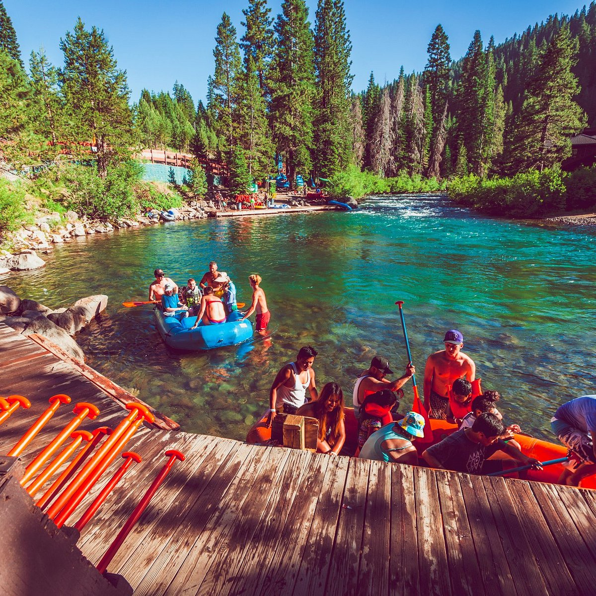

Our Purpose: To connect people with the raw beauty of nature through unforgettable river adventures.
Our Mission: To provide safe, exhilarating, and eco-conscious rafting experiences that foster a deep respect for the environment.
Our Motto: "Ride the Rapids, Preserve the Wild."